MEDICAL DEVICE DEVELOPMENT · IN COLLABORATION WITH MOFFITT CANCER CENTER
PERIFUSE
A wearable platform for localized immune cell delivery
Developed in collaboration with Moffitt Cancer Center through the University of South Florida, PERIFUSE explores the controlled delivery of immune cells through a compact, wearable, battery-powered device. My contributions focused on the custom controller electronics, PCB layout and assembly, embedded firmware, power characterization, and electrical integration and testing.

Prototype / research-stage concept. The report documents promising 72-hour imaging results in treated resin alongside limitations and failures in earlier experiments. The prototype has not undergone clinical validation.
Engineering Challenge
Developed by a University of South Florida engineering team with Moffitt Cancer Center mentorship, PERIFUSE explored whether immune cells could be stored and delivered in small, scheduled doses using a portable, body-mounted system. Challenges included maintaining cell viability, controlling microfluidic delivery, minimizing device size and power demand, and selecting materials compatible with cell handling.
Core requirements
- Three-day cell storage and dosing concept
- At least 80% cell viability target, evaluated through biological and material testing
- Accurate, low-volume scheduled delivery
- Wearable form factor and secure attachment
- Cost, sterility, and material compatibility constraints
My technical contributions
- Microcontroller selection, PCB design, component soldering, and power architecture
- Embedded C firmware for low-duty-cycle dosing
- Electrical integration of the pump, battery, and actuation circuitry
- Power measurements, pump characterization, and system troubleshooting
Embedded Electronics & PCB Development
I developed a compact 17 × 12 mm custom PCB built around the ATtiny1616 microcontroller. The system used a 150 mAh single-cell Li-ion battery, a regulated 5 V supply for the piezoelectric pump, and a MOSFET switching stage. Component selection and board layout balanced size, electrical requirements, manufacturability, and low standby power.
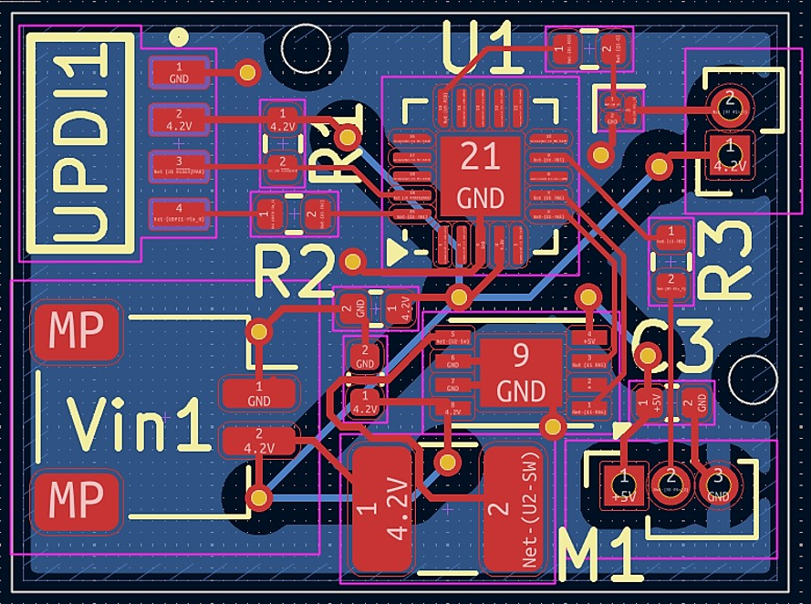
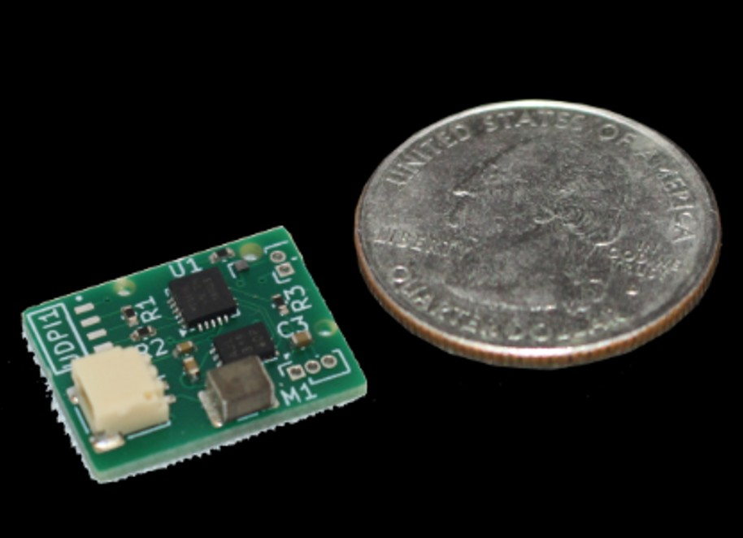
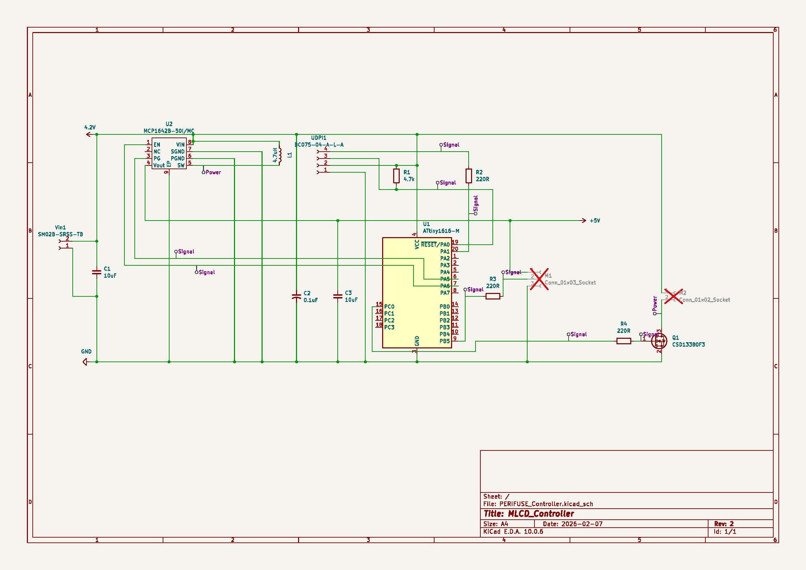
Embedded Firmware & Power Management
I wrote embedded C firmware for the ATtiny1616, using its low-frequency real-time counter to schedule pump operation while placing the controller into a low-power sleep state between events.
Short active pumping intervals and long idle periods addressed the project's intermittent dosing requirements. The flowchart shows the control sequence and scheduling logic. The source code can be linked after the public repository is ready.
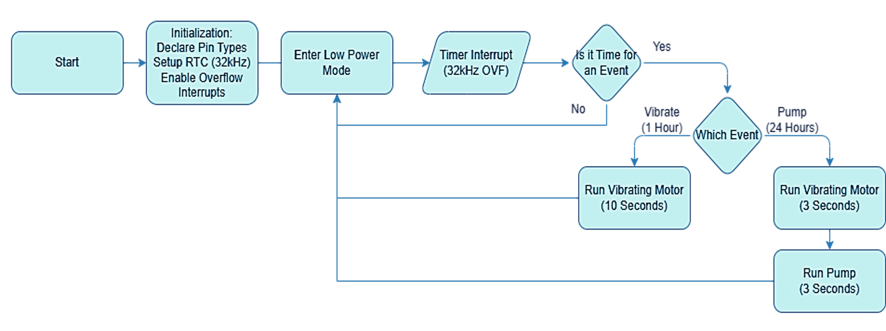
Mechanical & Fluidic Integration
The project team developed multiple enclosure and chamber prototypes to address component fit, tubing routing, adhesive stability, and fabrication constraints. My focus was on integrating the electronics, pump, and electrical connections with the overall device.
The fluid path combined a cell chamber with pump-driven delivery. Testing considered oxygen exchange through a thin PDMS membrane, material compatibility, and flow restrictions. Later revisions addressed comfort feedback and pump and fluid-path issues.

Component designs
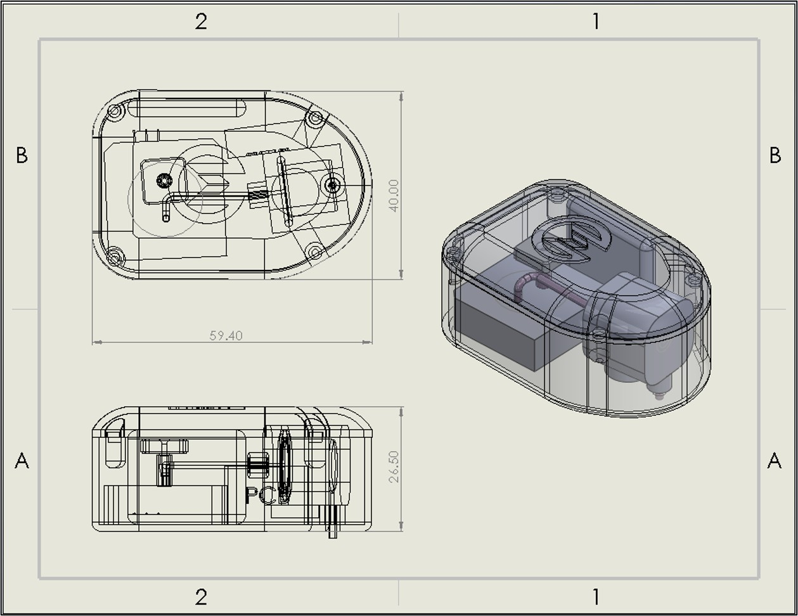
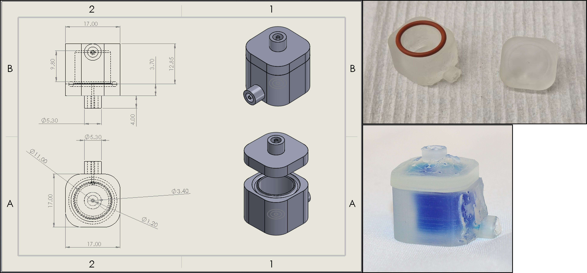
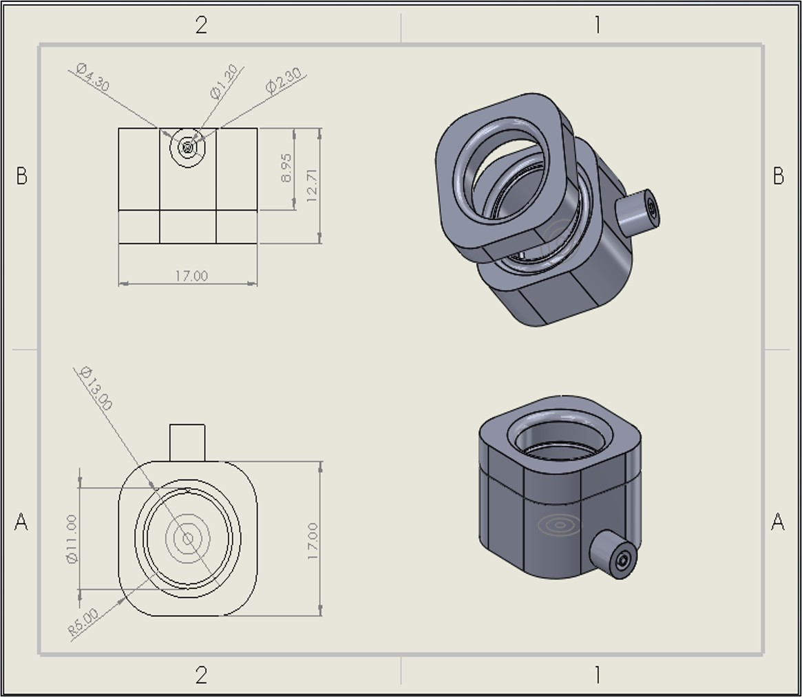
Testing, Results & Engineering Tradeoffs
The six prototype iterations investigated biological compatibility, pump control, power use and wearability. Results guided technical improvements but did not establish clinical performance of the integrated device.
72-hour cell viability imaging
After earlier resin-associated cell death, the team compared post-processing approaches for Bioclear resin. Confocal imaging of Jurkat cells stained with CellTracker Green CMFDA and propidium iodide was collected at 0 and 72 hours. The final report describes approximately 90% green-stained cell area in its qualitative analysis of the acetone-treated resin, with viable, proliferating cells. This was a material-compatibility experiment, not a validated clinical or whole-device outcome.
Battery and low-power electronics
RTC overflow interrupts and controller sleep reduced time spent in active operation. A one-day device test suggested approximately 5% battery use based on an estimated state of charge. The report projects about 10 days of practical operation, subject to battery-protection and measurement limitations, rather than reporting a completed 10-day endurance test.
Flow and localization
Pump characterization investigated flow initiation and repeatability. In a silicone tissue-model experiment, a syringe pump delivered colored liquid at 0.3 mL/min, with localized fluid reported in 11 of 12 sampled regions. This evaluated a surrogate model, not delivery in living tissue.
Engineering obstacles
Challenges included resin cytotoxicity, flow-path restrictions and vacuum lock, pump reliability, and real-time-counter configuration. The control firmware moved away from an unsuccessful periodic-interrupt approach to RTC overflow scheduling. Comfort testing with approximately 30 participants informed team revisions to attachment stability.
Experimental and simulation imagery
These images document dye handling and fluid modeling; they should not be interpreted as complete biological validation.
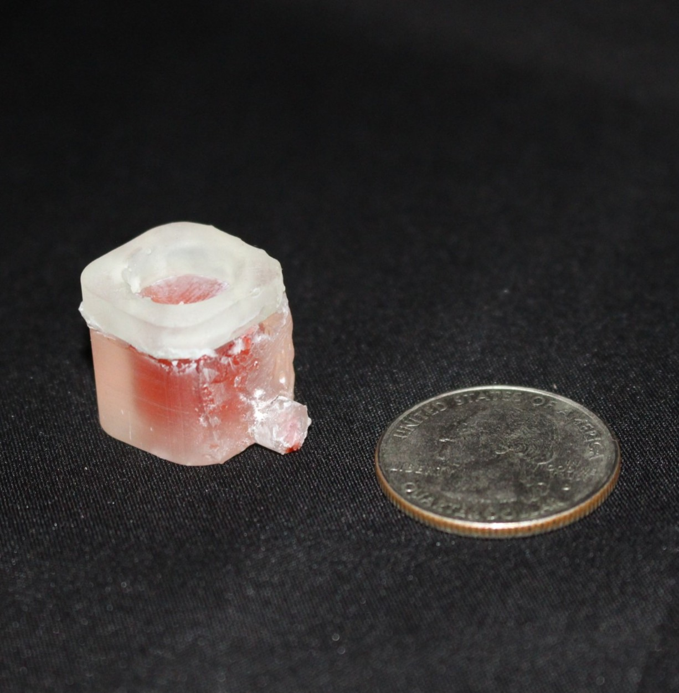
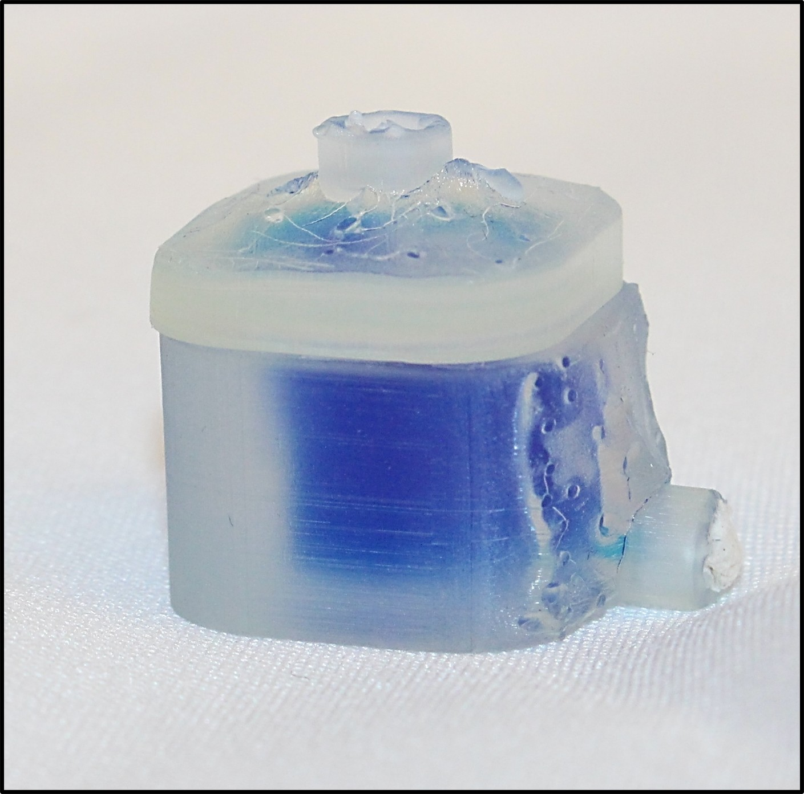
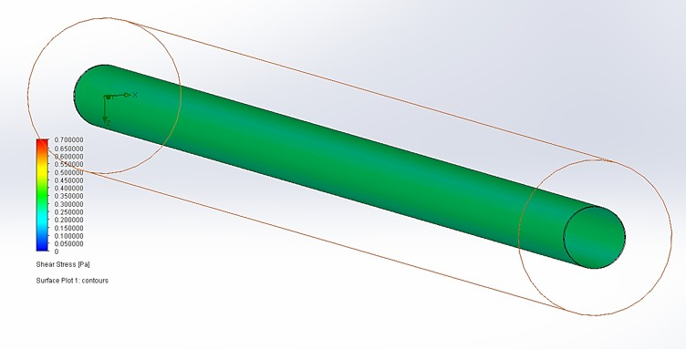
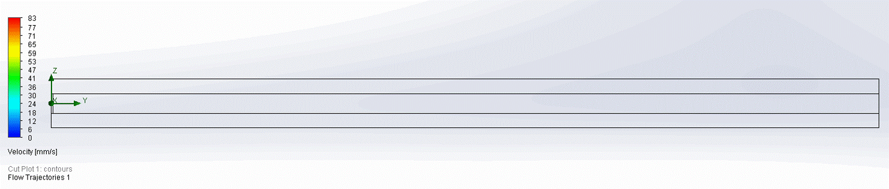
Supporting Materials
The university poster and schematic are linked below. This case study draws on the team's final design report; further sources can be added after review for public release.
- Project presentation: 40-minute design walkthrough; ideally include chapter timestamps and a short summary.
- University poster: View the full-resolution project poster (PNG). The poster opens separately rather than being embedded on this page.
- Electronics: Controller schematic image and illustrated PCB layout above. KiCad source, Gerbers, and curated BOM can be linked after publication review.
- Firmware: Embedded C source with a README explaining target MCU, toolchain, and scheduling architecture.
- Mechanical: Assembly, chassis, and reservoir design drawings are illustrated above. Editable CAD or STEP exports can be linked once ready.
- Validation: Reservoir dye photographs and flow simulations are shown above; the report describes 72-hour resin-compatibility imaging, battery measurements, and a tissue-model dye localization experiment. Full datasets can be published with appropriate context and permissions.
For additional project documentation or implementation details, please reach out.